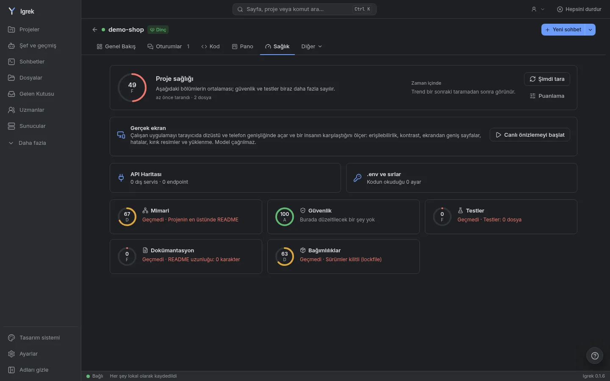
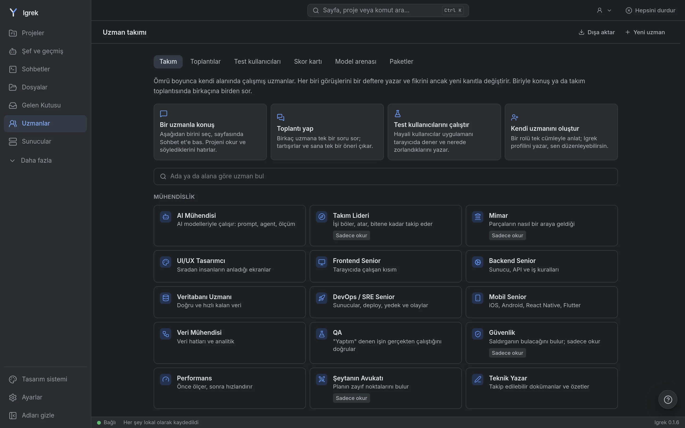

AI ajanların, anlaşılır.
Igrek, kendi bilgisayarında Claude Code ve Codex'in üstünde çalışır. Projelerini hatırlar, özel bilgilerini yapay zekâdan uzak tutar ve her dosyanın neden değiştiğini gösterir.
Ücretsiz. Hesap yok, API anahtarı yok, telemetri yok. Linux, macOS ve Windows.

Ne yapar
Tek bir ajanın kendi başına yapmadıkları
Kodu Claude Code ve Codex yazar. Igrek onların etrafındaki katmandır: hafıza, gizlilik, aynı anda birçok proje ve ne olduğunun net resmi.
Bu neden değişti?
Değişen her dosyanın yanında: ona yol açan istek, ait olduğu plan adımı ve uzmanın notu.
Tek başlangıç
"Ne yapmak istiyorsun?" işi doğru projeye ya da aynı anda birkaçına götürür; her biri kendi kopyasında.
Sağlık ve Düzelt düğmesi
Mimari, güvenlik, testler ve bağımlılıklar puanlanır; çoğu bulgu tek tıkla, gerisi doğru uzmanla düzelir.
Baştan gizli
Maaş, IBAN, kimlik numarası ve .env sırları modele ulaşmadan yer tutucuya dönüşür.
Otuz uzman
Güvenlik, veritabanı, mimari ve daha fazlası: alanını bilen, salt okunur inceleyiciler.
Kalıcı hafıza
Kararlar ve hatalar proje başına saklanır, benzer işten önce AI'ın önüne konur. Claude ve Codex aynı kuralları okur.
Nasıl çalışır
Üç adım, sonra kendi işler
Kur
Bilgisayarına uygun uygulamayı indir (yaklaşık 17 MB). İlk açılışta çalışma ortamını bir kez indirir.
Projelerini ekle
Çalıştığın klasörleri seç. Claude'un daha önce çalıştığı klasörleri Igrek kendisi bulur.
Sor
Ne istediğini yaz. Igrek projeyi ve çalışma yolunu seçer, her adımı gösterir.
Senin
Senin bilgisayarında çalışır
Igrek zaten sahip olduğun AI girişlerini kullanır; ödeyeceğin yeni bir şey yok. Bize hiçbir şey gönderilmez: telemetri yok, hesap yok; Igrek'in internette açtığı her adres Ayarlar'da listelenir.
- Claude ve Codex aboneliklerin, API anahtarı yok
- Özel bilgiler modelden gizlenir, senin tarafında geri doldurulur
- AI'a dur diyen bir dosya sana gösterilir, kararı sen verirsin
- Push, yayına alma ve yayımlama her zaman senin onayını bekler

İndir
Igrek'i edin
İmzalı güncellemeler, Igrek'in kendisi kurar. Claude Code ya da Codex de gerekir; Igrek ilk açılışta nasıl kurulacaklarını gösterir.
Sorular
Ücretsiz mi?
Evet. Igrek'i kurmak ve kullanmak kişiler ve şirketler için ücretsizdir. Kendi Claude ya da Codex planını kullanır; model çağıran her şey işaretlidir, limitinden neyin harcadığını görürsün.
Kodum bilgisayarımdan çıkıyor mu?
Yalnızca zaten kullandığın yapay zekâya, Claude Code ve Codex'in gönderdiği şekilde. Igrek üstüne bir şey eklemez: telemetri yok, bizim bir sunucumuz yok. Özel bilgiler önce yer tutucuya çevrilir.
İlk açılışta neden bir şey indiriyor?
Igrek'in sunucusu Bun ile çalışır. Kurulumu küçük tutmak için uygulama Bun'ın resmî sürümünü bir kez indirir (yaklaşık 35 MB), Bun'ın yayımladığı sağlama değeriyle doğrular ve saklar.
Açık kaynak mı?
Kaynak kodu okunabilir, ama açık kaynak değildir: Igrek Use License herkesin ücretsiz kullanmasına izin verir; satmak, yeniden dağıtmak ya da servis olarak sunmak yazılı izne bağlıdır.